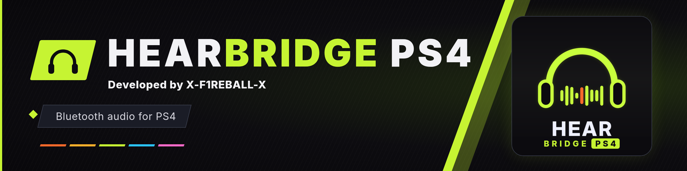
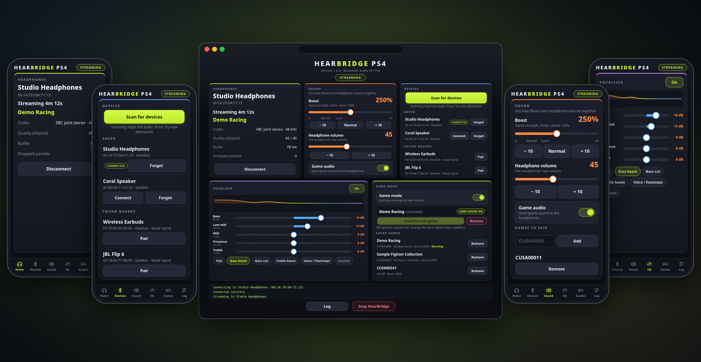
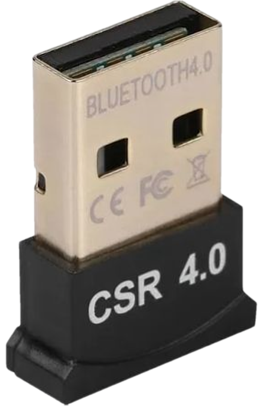
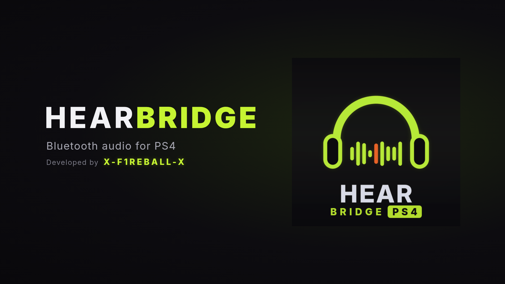

HearBridge PS4 drives a small USB Bluetooth dongle (CSR8510) and streams game audio to any A2DP headset, earbuds or speaker. You control everything from a web page served by the console, on a phone, a PC or the PS4 browser.
Download v1.0.0Source on GitHub
0A12:0001), plugged into the PS4.
HearBridge-PS4-1.0.0.pkg with GoldHEN's package installer. A HearBridge tile appears on the home screen.http://<console-ip>:8090 on a phone or PC on the same network, or press OK on the tile message and then X (Circle if your console is set that way) to open it in the PS4 browser.HearBridge keeps running after the tile closes and reconnects to your last headphones by itself. Restarting the console once after the first install is recommended, so games start smoothly.

config.ini and adds the plugin to plugins.ini under [default], keeping config.ini.bak / plugins.ini.bak the first time.Delete the HearBridge app from the PS4. To remove everything, also delete /data/GoldHEN/plugins/hearbridge_game_tap.prx, its line in /data/GoldHEN/plugins.ini, the folders /data/hearbridge and /data/GoldHEN/hearbridge, and the files hearbridge_skip.txt and hearbridge_tap_off in /data/GoldHEN. Restart the console to stop a running service.